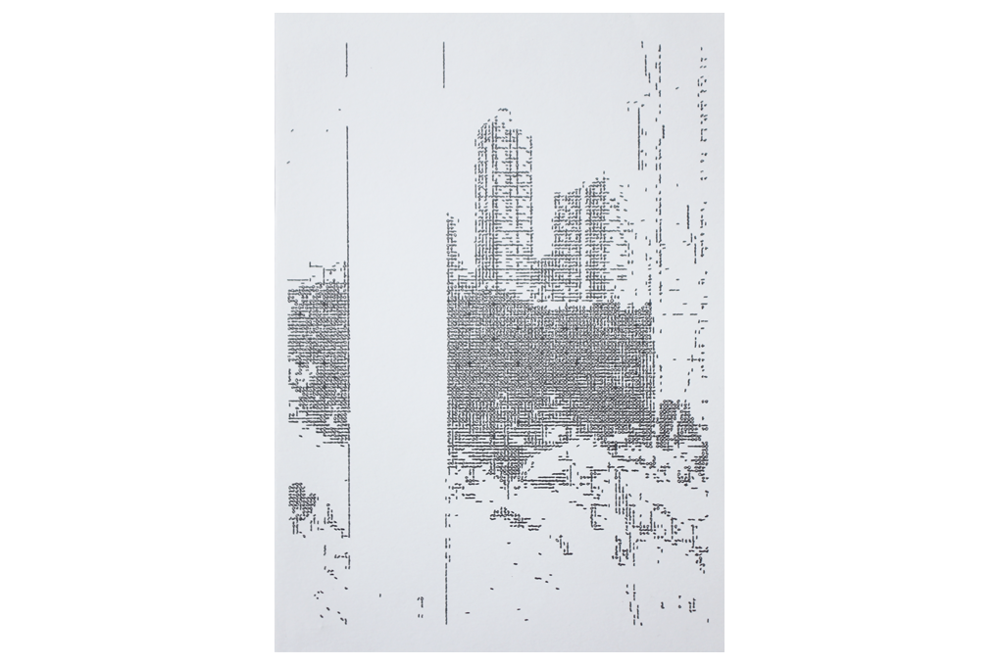

lost in translation is a work in progress that explores computational metaphors and translations. It is an attempt at a visual dialogue with the machine to investigate the connections that are shaped when we interact with our computers through code — how much does the code impose control on the self and how much of the self do we encode into our machines? This project deconstructs layers of computational metaphors (camera, computer, machine learning, pen plotter) to understand the fragmented, abstracted, and subjective nature of the translations that occur between our perceived reality and the digital one.
